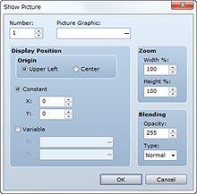
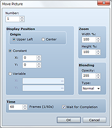
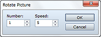
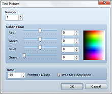
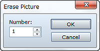
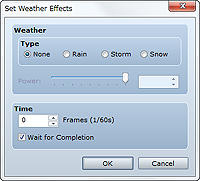

Displays a picture (still image) onscreen.
Specify a control number (1 to 100) to associate with the picture.
Specify the image file to display.
Specify the picture's display position. Start by selecting either Upper Left or Center as the Origin. Then, specify the exact coordinates of the display position (with the origin you set being 0, 0). To use the Constant setting, enter coordinates (-9999 to 9999) in the X box (horizontal) and Y box (vertical). To specify coordinates using variable values, select Variable and then specify the variables to look up in the X and Y boxes.
Specify the picture's zoom factor in Width % and Height % using a value between 0 and 2000%, with 100% being original image size.
Specify the opacity (0 to 225) of the picture in Opacity. The lower the value, the more transparent the image will be. Setting "0" means the picture will not be displayed. In Type, specify the blending method to use when displaying a transparent picture. Normal is the standard method, Additive results in a lighter color, and Subtractive results in a darker color.
• Up to 100 pictures can be simultaneously displayed. The higher a picture's control number, the greater the priority at which it will be displayed.
• If pictures have the same control number, only the one displayed last will appear. (The rest will be cleared.)

Moves the picture currently being displayed.
Specify the control number (1 to 100) of the target picture.
Specify the position to which to move the picture. Start by selecting either Upper Left or Center as the Origin. Then, specify the exact coordinates of the display position (with the origin you set being 0, 0). To enter specific coordinates, select Constant, and then enter coordinates (-9999 to 9999) in the X box (horizontal) and Y box (vertical). To specify a coordinate using variable values, select Variable and then specify the variables to look up in the X and Y boxes.
Specify the picture's post-move zoom factor in Width % and Height % using a value between 0 and 2000%.
Specify the opacity (0 to 225) of the post-move picture in Opacity. The lower the value, the more transparent the image will be. Setting "0" means the picture will not be displayed. In Type, specify the blending method to use when displaying a transparent picture. Normal is the standard method, Additive results in a lighter color, and Subtractive results in a darker color.
Specify the time to spend on moving the picture in frames (1 to 600). One frame is equivalent to 1/60 of a second.
When this option is selected, processing stops until this command is finished running.

Rotates the currently displayed picture.
Specify the control number (1 to 100) of the target picture.
Specify a rotation speed between -90 and 90. A positive value indicates counterclockwise rotation, and a negative value clockwise rotation. Specify "0" to stop rotation.
• The rotational axis (central point) depends on the origin (upper left or center) specified the last time the target picture was displayed or moved.
• Overuse of this event command may slow the game down.

Changes the color tone of the currently displayed picture.
Specify the control number (1 to 100) of the target picture.
Adjust the color tone (-255 to 255) for Red, Green, and Blue. Use Gray to set the intensity (0 to 255) of the grayscale filter. The higher the value, the greater the overall strength of the color. You can check color tone changes in the preview area on the right side of the dialog box.
Specify the time to spend on changing the picture's color tone in frames (1 to 600). One frame is equivalent to 1/60 of a second.
When this option is selected, processing stops until this command is finished running.
• The change in color tone is active until it is changed again by this command.

Clears the currently displayed picture.
Specify the control number (1 to 100) of the picture to clear.

Controls the display of effect images representing weather (rain, storms, and snow).
Specify the kind of image to display. Specify None if you do not want to display an image.
Specify the image's display intensity (1 to 9).
Specify the time to spend on changing the processing in frames (1 to 600). One frame is equivalent to 1/60 of a second.
When this option is selected, processing stops until this command is finished running.
• This command cannot be used in battle events.